1.1.The Big Bang
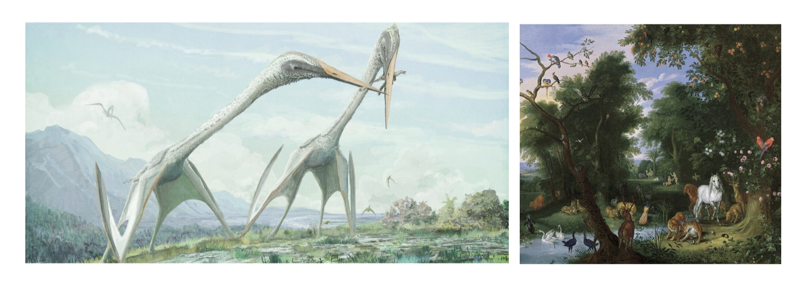
Over 10 billion years ago, the universe🌌 was born with a massive explosion of subatomic particles rich in energy. Within seconds, the simplest atoms such as H and He were formed. Later, under the influence of gravity, matter condensed into planets, releasing the energy needed to fuse some simpler atomic nuclei into more complex elements. After several hundred million years, the Earth and all the chemical elements found on it were formed. These elements make up atoms, and atoms combine to form molecules, and small molecules stack up to eventually form corresponding biological macromolecules. However, at this time, the Earth was still in a non-living state.
As the Earth evolved, simple microorganisms that could extract energy from sunlight - life - appeared. Billions of years ago, on a certain day on Earth, blue-green algae were born. Early Earth had no oxygen, but these insignificant single-celled organisms made the anaerobic atmosphere aerobic through their own oxygen-producing photosynthesis and nitrogen fixation. Later, single-cell bacteria and archaea were born. Then, eukaryotic organisms were born, including fungi, plants, and animals. The first vertebrate to evolve was probably fish, and some brave fish swam onto land and evolved into reptiles and mammals; the former flew into the air and became birds, while the latter grew tails and became monkeys; monkeys evolved into apes, and later into various populations of humans. Undoubtedly, humans are the highest evolved beings on this timeline. What is the mechanism behind the emergence and evolution of life? - This question, which has plagued all kinds of life since the beginning of the Big Bang, was finally answered with the arrival of Darwin. To explore the nature of life, the discipline of Biochemistry was born.

1.2.Cell Structure
The cell is the basic structural and functional unit of all living organisms. From single-celled organisms like paramecium to complex organisms like humans, countless small cells form tissues, tissues form organs, and organs coordinate with each other, forming a complex network of life. Although living organisms are so complex, cells still maintain a certain degree of independence.
The cell membrane or cell wall separates the cell from the external environment. The cell wall contains a large amount of polysaccharides and proteins, giving the cell a certain mechanical strength; the membrane is a phospholipid bilayer structure, formed by countless lipids and proteins aggregated together through hydrophobic interactions, and the fluid mosaic model also elucidates the mechanism of biological membranes. There are many receptor proteins and transport proteins on the membrane, responsible for transmitting extracellular signals and participating in substance transport. The cell membrane and cell wall also form the structural basis for cell growth and division. For example, during bacterial cell growth, new peptidoglycan monomers are inserted into the growing sites of the peptidoglycan layer. The membrane also completes endocytosis and exocytosis of substances into and out of the cell through fusion and division.
Once inside the microscopic world of the cell, there are various cell organelles (in eukaryotic cells) and biomolecules. Apart from the nucleus/nucleoid, the part surrounded by the membrane is called cytoplasm, also known as cell sol. Typical eukaryotic cells are much larger than prokaryotic cells. A significant feature that distinguishes eukaryotic cells from prokaryotic cells is the presence of a membrane-bound cell nucleus and numerous membrane-bound organelles.
| Cell Wall and Cell Membrane | Cell Nucleus | Cytoskeleton | Lysosome |
|---|---|---|---|
| 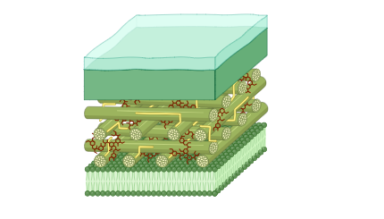 | 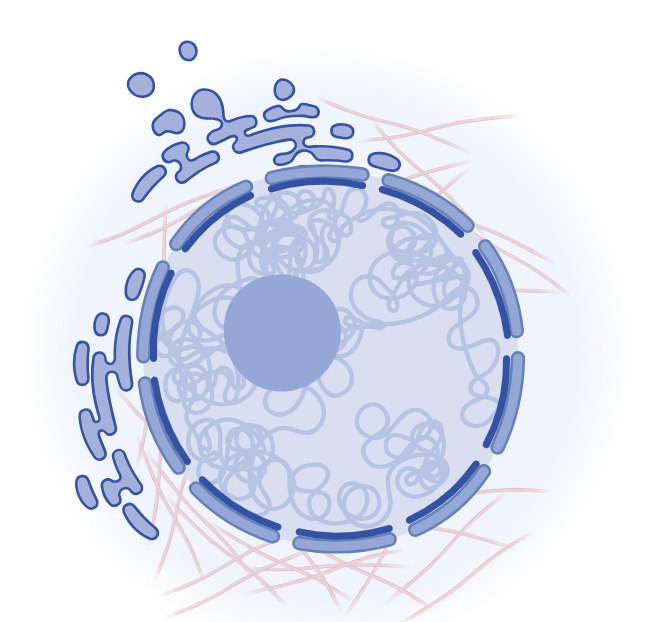 | 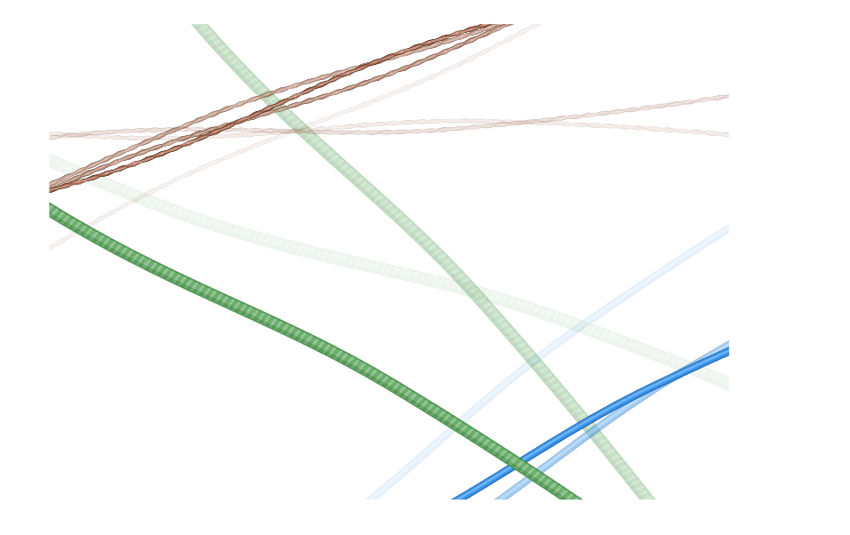 | 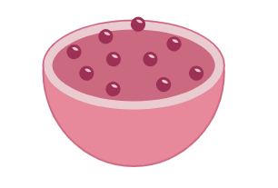 |
| Rough Endoplasmic Reticulum | Golgi Apparatus | Mitochondria | Chloroplast |
| 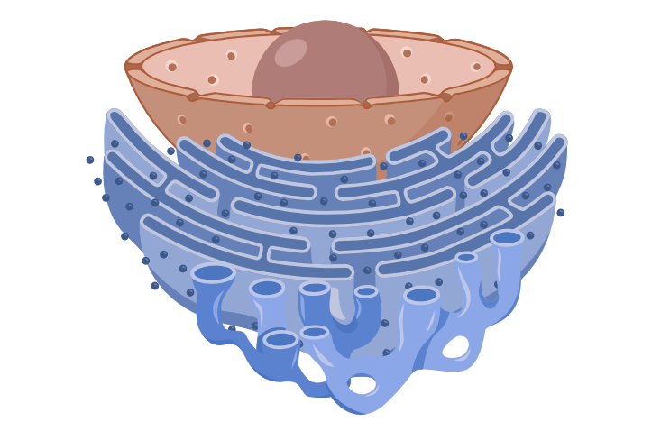 | 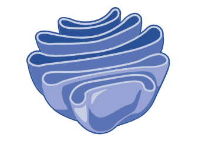 | 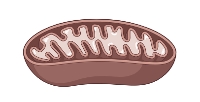 | 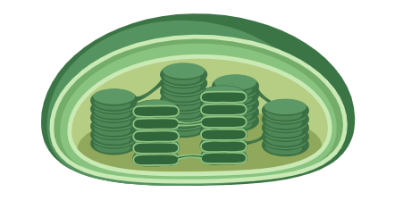 |
Ribosomes are cellular organelles composed of proteins and RNA. They are responsible for the assembly of polypeptide chains and protein synthesis. Ribosomes are membrane-less organelles. In prokaryotic cells, the size of ribosomes is 70s, consisting of a 50s large subunit and a 30s small subunit. In eukaryotic cells, the size of ribosomes is 80s, consisting of a 60s large subunit and a 40s small subunit. Sometimes multiple ribosomes can be connected together to form a structure called polysomes, which simultaneously initiate the process of polypeptide translation. Free ribosomes in the cytoplasm are mainly responsible for synthesizing proteins that remain in the cytoplasm.
Endoplasmic reticulum (ER) is a three-dimensional network of membrane-enclosed spaces. Based on whether ribosomes are attached to the ER, it can be divided into rough ER and smooth ER. Ribosomes attached to the rough ER are responsible for synthesizing secreted proteins, digestive enzymes in lysosomes, membrane proteins, etc. The smooth ER, which lacks ribosomes, is primarily involved in lipid synthesis. The Golgi apparatus is responsible for sorting, processing, and modifying proteins transported from the rough ER. Processed proteins are then transported to their correct destinations in vesicles.
Lysosomes contain numerous enzymes that can degrade proteins, polysaccharides, nucleic acids, and lipids. When certain biomacromolecules or damaged cells enter lysosomes, they are degraded into simple small molecular substances, such as amino acids and fatty acids, which can be reused in cellular metabolism. The enzymes inside lysosomes are deactivated in the slightly alkaline cytoplasm with a pH of around 7, which protects the cell from self-degradation. Lysosomes are only present in animal cells, while plant cells have vacuoles that perform degradation functions as well as storage of pigments and providing structural support.
Mitochondria are the powerhouses of the cell. They contain three major bioenergetic systems: the tricarboxylic acid (TCA) cycle, fatty acid beta-oxidation, and the respiratory chain and oxidative phosphorylation system. The oxidation reactions in mitochondria release a large amount of chemical energy, which is converted into biological energy, adenosine triphosphate (ATP), to provide energy for cellular activities. Mitochondria have a double-membrane structure, and the respiratory chain is located on the inner membrane.
Chloroplasts are also double-membrane organelles and can be considered as energy factories. Unlike mitochondria, chloroplasts capture light energy through photosynthetic pigments and use it to synthesize ATP through photosynthetic phosphorylation. They also convert CO2 into organic carbon compounds.
Compared to the simple circular naked nucleoid in prokaryotic cells, eukaryotic cells have a complex nucleus. The nucleus is surrounded by a nuclear membrane and contains nucleoplasm, nucleoli, as well as RNA and proteins. The most important component is the linear chromatin (chromosomes). The nucleus is the site for DNA replication, repair, transcription, and post-transcriptional processing. Mature mRNA enters the cytoplasm through nuclear pores and binds to ribosomes to initiate translation. Therefore, unlike prokaryotic cells that simultaneously transcribe and translate genes, gene replication and expression in eukaryotic cells have strict spatial and temporal specificity.
In eukaryotic cells, microtubules, microfilaments, and intermediate filaments form the cytoskeleton, which plays a crucial role in maintaining cell shape and structure. Microtubules and microfilaments are also involved in cell movement.
In addition, there are other important components in the cell that are not listed here. For more information, please refer to Cell Biology.
1.3.Prokaryotic Cells and Eukaryotic Cells
1.3.1.Three-Domain Theory
Woese determined that all existing organisms evolved from three lineages through the sequencing of 16S rRNA and 18S rRNA: Bacteria domain, Archaea domain, and Eukaryote domain, also known as the three-domain theory. Prokaryotic cells, often referred to as prokaryotic microorganisms, include true bacteria (three bacteria and three bodies) and archaea. Although archaea are taxonomically closer to eukaryotes, they are still classified as prokaryotic microorganisms based on their cellular structure and physiological metabolism characteristics.
Phylogenetic analysis based on 16S (18S) rRNA:
- rRNA sequencing: Extract the genome of the organism to be tested, design appropriate primers to amplify the 16S (18S) rRNA gene, sequence the gene, input the sequence results into the database, and analyze and align the sequences to roughly determine the taxonomic status of the strain.
- Construction of phylogenetic trees: Input the sequence into a computer, use the computer to perform BLAST sequence alignment analysis, and construct a phylogenetic tree.
I hope this translation is helpful! Let me know if you need further assistance or have other content to translate.
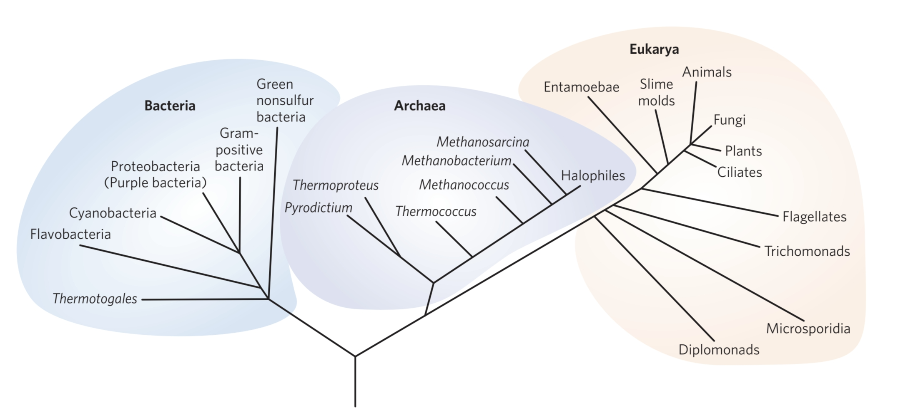
1.3.2.Cellular Differences
As mentioned earlier, the main difference between prokaryotic cells (microorganisms) and eukaryotic cells (microorganisms) is whether they have a complete nucleus or not. Prokaryotic organisms have a naked nuclear area instead, so DNA transcription and translation occur simultaneously. Prokaryotic cells use membrane proteins or intramembrane systems to replace missing membrane-enclosed organelles and perform corresponding physiological activities, such as mesosomes acting as mitochondria in prokaryotic organisms, and plastids and chromoplasts acting as photosynthetic organs in blue-green algae and photosynthetic bacteria. There are also some intracellular substances in prokaryotic cells, such as heterochromatin particles, poly-β-hydroxybutyrate, lipid granules, and starch granules, which are responsible for storing corresponding chemical substances and reducing osmotic pressure.
- The following table lists some common differences between bacteria, archaea, and eukaryotes:
| True Bacteria | Archaea | Eukaryotes | |
|---|---|---|---|
| Cell Nucleus | ✖ | ✖ | ✔ |
| Circular DNA | ✔ | ✔ | ✖ |
| Membrane-bound organelles | ✖ | ✖ | ✔ |
| Cell Wall | Peptidoglycan | Polysaccharides (Pseudopeptidoglycan) | Polysaccharides (chitin, cellulose, glucan, mannan) |
| Ribosome | 70S | 70S | 80S |
| Initiation Amino Acid | Met | fMet | fMet |
| Multiple Codon | ✔ | ✔ | ✖ |
| mRNA Capping and Tail | ✖ | ✖ | ✔ |
| Nitrogen fixation | ✔ | ✔ | ✖ |
| Photosynthesis | Based on pigments | ✖ | ✔ |
| Methanogenesis | ✖ | ✔ | ✖ |
1.4.Biological Evolution
Prokaryotic microorganisms represented by bacteria and archaea were the first life forms to appear on Earth. Bacteria are mostly found in soil, water, air, and decaying corpses, while archaea, due to the special nature of their cell walls and membranes, have strong resistance to adversity and mostly live in high-temperature, high-acid, and high-salt environments. The study of bacterial microscopic structure greatly promoted the development of microbiology, among which Escherichia coli is one of the most thoroughly studied strains of bacteria, with the advantages of simple structure, mostly single-celled or haploid strains, simple nutritional requirements, easy artificial cultivation, rapid growth, the ability to produce various mutant strains, and strong operability. At the same time, E. coli has a clear genetic background and is an important model strain for prokaryotes, so it has always been a key research object in genetic engineering and metabolic engineering.
Bacteria exhibit a wide variety of morphologies, including cocci, bacilli, and spirilla, with bacilli being the most widely distributed. Based on their metabolic characteristics and nutritional requirements, bacteria (or microorganisms) can be roughly classified into four types of nutritional categories: photoautotrophs1, photoheterotrophs2, chemoautotrophs3, and chemoheterotrophs4. Additionally, based on their oxygen requirements, microorganisms can be further categorized as: obligate aerobes, facultative anaerobes, microaerophiles, aerotolerant anaerobes, and obligate anaerobes.
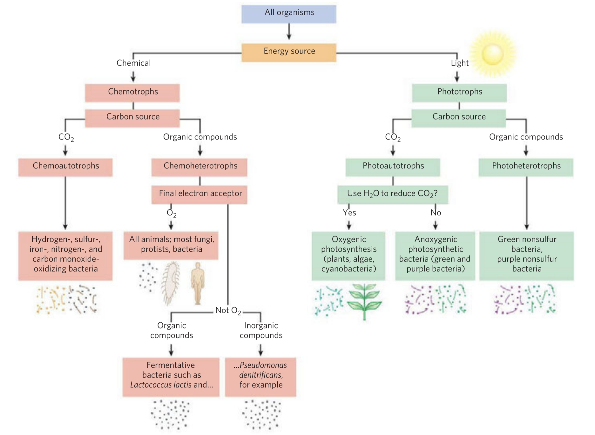
The process of prokaryotic evolution to eukaryotes can be demonstrated through the following points:
From cell morphology perspective
- Eukaryotic cells are larger than prokaryotic cells and have a complete system of internal membrane
- Eukaryotic organisms have specialized nutritional and locomotive organs on their cell surface, allowing for more complex interactions with their environment
From cell structure perspective
- Eukaryotic cell walls do not contain peptidoglycan, but instead contain polysaccharides such as cellulose, chitin, and glucan, which are more cross-linked and resistant to chemical and mechanical degradation compared to the peptidoglycan or pseudopeptidoglycan in prokaryotic cell walls (applies only to microbial cells)
- Eukaryotic cell membranes contain sterols, which increase the mechanical strength of the membrane, whereas prokaryotic cell membranes, except for mycoplasma, do not contain sterols; eukaryotic cell membranes also have more complex substance transport and signal transduction systems compared to prokaryotic cell membranes
- Eukaryotic cells contain membrane-bound organelles in their cytoplasm, which compartmentalize the cell into subcellular structures where enzymes and metabolic pathways are located, ensuring coordinated and interconnected metabolism; prokaryotic cells lack membrane-bound organelles and perform similar functions through membrane proteins or internal membrane systems
From genetics and gene expression perspective
- Eukaryotic cells have a complete nucleus structure, which allows for strict spatial and temporal regulation of gene expression - the synthesis of RNA and protein synthesis processes are separated
- With the increasing DNA content of cells, chromosomes, complexes of DNA and proteins, become more tightly linked to mechanisms that ensure their even distribution to daughter cells during cell division
- Eukaryotic genomes are diploid, containing two or more chromosomes with histones and carrying more genetic information, while prokaryotic genomes are haploid, consisting of a single chromosome without histones
- Eukaryotic cells have larger cytoplasmic ribosomes (80S) compared to prokaryotic cells (70S), indicating greater complexity
- Eukaryotes reproduce sexually, while prokaryotes do not; eukaryotes undergo mitosis, during which the chromatin is seen as a line of chromosomes under a light microscope
As life evolves, more complex animal and plant cells appear. For more information on these topics, please refer to Cell Biology.
| Animal Cell | Plant Cell |
|---|---|
| 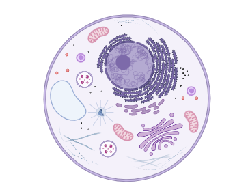 | 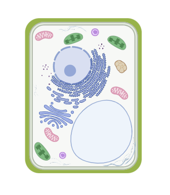 |